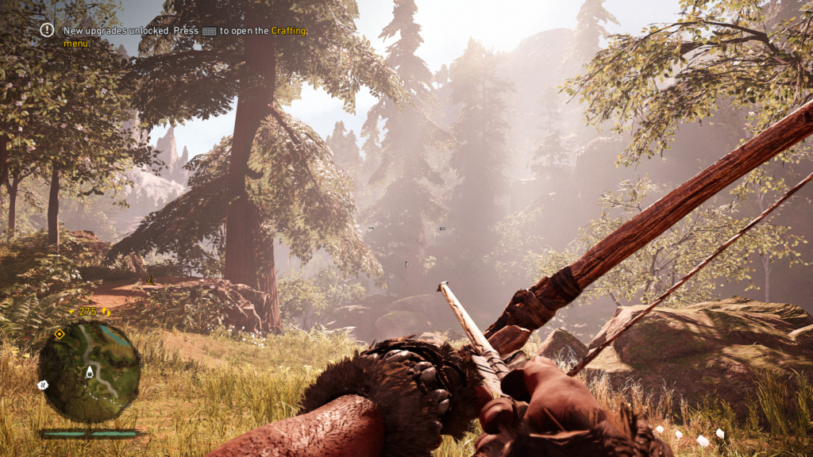
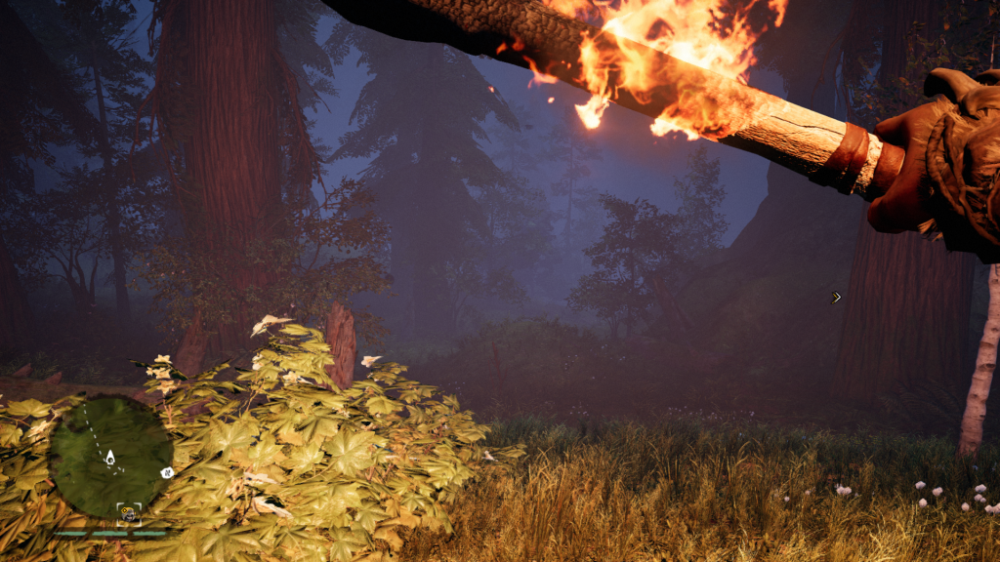
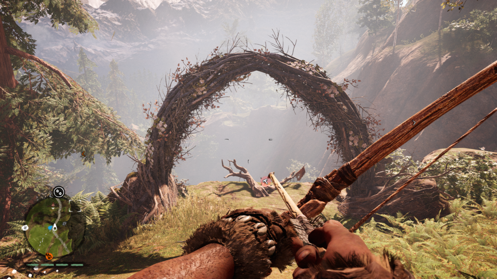
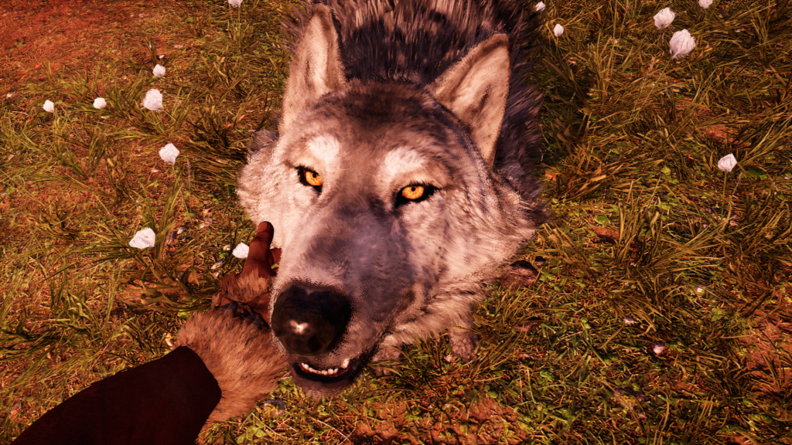
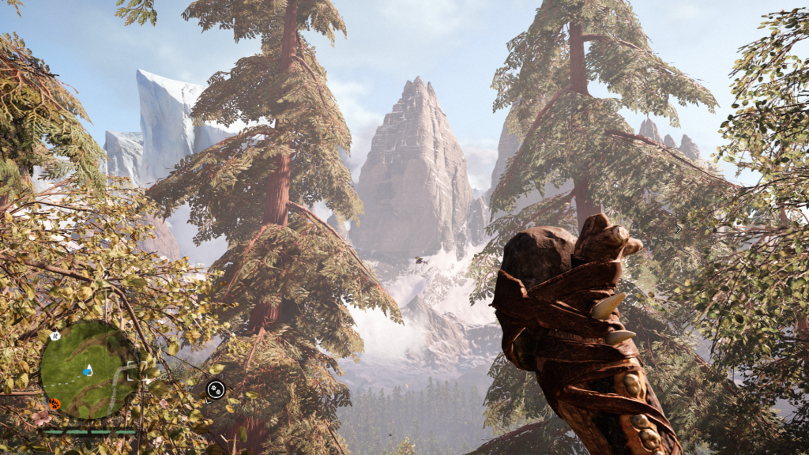
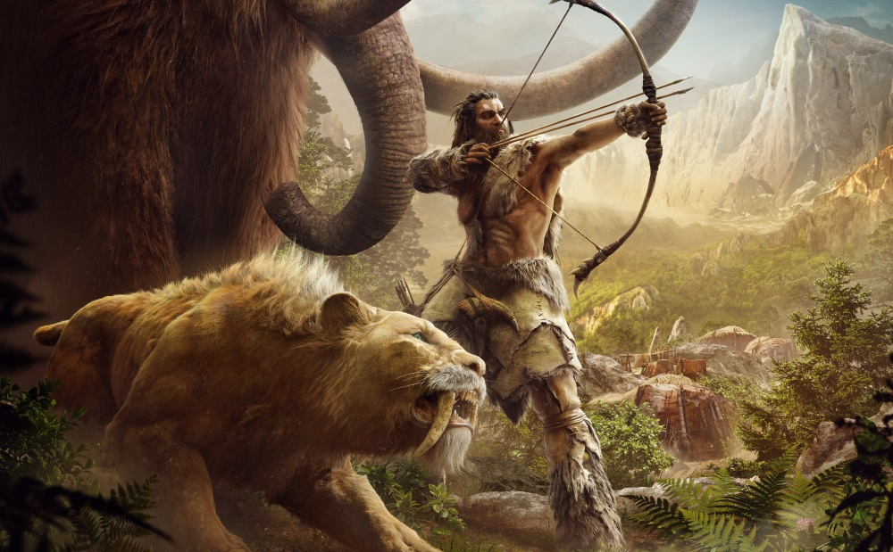

Personajul principal este Takkar, un membru al tribului Wenja, trib care este decimat rapid, la începutul jocului, după atacul sângeros a două tabere adverse, Udam și Izila. Prin urmare, Takkar se trezește în sălbăticie, fără arme și fără resurse, fiind nevoit să le procure de pe unde poate, fiind înconjurat de inamici, oameni și animale de pradă specifice acelei perioade.
De aici înainte, firul narativ este cel pe care-l știm toți cei care am jucat alte titluri Far Cry, adică tânărul Takkar este împins de la spate de dorința de răzbunare și de datoria de a-și reuni puținii membri ai tribului rămași în viață după masacru.

Campania nu este liniară, ci poate fi abordată după bunul plac. Pe măsură ce explorăm Valea Oros, vom cunoaște noi personaje care ne vor ajuta să evoluăm, trimițându-ne în diferite misiuni în care vom confrunta direct triburile inamice.
Sincer să fiu, mi-a plăcut mai mult povestea din acest joc, decât cele din Far Cry 3 și Far Cry 4.
GAMEPLAY
Aici vin schimbările masive! Far Cry Primal nu este un shooter clasic, în care ai la dispoziție un arsenal imens și în care poți străbate mari întinderi de teren conducând mașini și SUV-uri. Nu, în Primal avem trei arme convenționale: o suliță, o bâtă aka măciucă și un arc cu săgeți, iar expedițiile le vom face inițial pe joc și ulterior pe spatele unor animale sălbatice pe care le-am domesticit.

Dacă tot am adus vorba despre domesticirea prădătoarelor, trebuie să-ți spun că în Far Cry Primal vei avea ocazia să iei cu tine în misiuni lupi, bufnițe și chiar tigri. Acest aspect mi-a plăcut foarte tare și trebuie să recunosc faptul că m-am atașat foarte repede de companionii mei necuvântători. Nu o singură dată am sărit în ajutorul prietenului lup sau tigru, care era atacat de băștinași. Patrupedele pot ataca inamicii, iar zburătoarele îi pot însemna din largul cerului.

Cele trei arme despre care v-am spus mai sus se pot aprinde, folosind focul, dar mare atenție, deoarece odată aprinse, acestea se vor consuma, vor arde și vei rămâne fără armă până când vei avea ocazia să-ți faci alta. Vânatul și adunarea de pietre și plante reprezintă singura modalitate de a crea arme și alte accesorii, iar upgrade-urile importante se câștigă după finalizarea quest-urilor principale.

Astfel, mecanicile de joc din Far Cry Primal sunt bazate pe explorare, adunarea resurselor, vânat, furișare și pe lupte violente cu armele mai sus menționate. Damage-ul făcut diferă în funcție de armă, dacă aceasta a fost aprinsă sau nu și de puterea cu care a fost inițiat atacul. Deci, nu e shooter, e prehistoric warfare.
GRAFICĂ
Din punct de vedere grafic, Far Cry Primal este cel mai arătos joc creat până în prezent de echipa de la Ubisoft Montreal pentru generația actuală de console.
Lumea înconjurătoare este absolut superbă! Avem munți acoperiți cu zăpadă, peșteri întunecate, râuri și lacuri, păduri înfrunzite și câmpii înflorite. Peste toate acestea domnește legea junglei, cu animale de pradă preistorice, care sunt gata să te înfulece cu prima ocazie. Singurele surse de iluminare sunt focul, soarele și luna. Am atașat în acest articol câteva materiale video din care îți vei putea face o impresie despre cum arată Primal, dar crede-mă atunci când îți spun că este unul dintre cele mai frumoase jocuri din ultima vreme. Încă un lucru care mi-a plăcut este că atunci când vânezi, poți cerceta urmele lăsate de animale, folosind Hunter Vision.
Pe partea de sunet, echipa de development a creat o limbă specială pentru joc, care vine cu trei dialecte, fiecare dintre acestea pentru câte unul dintre cele trei triburi de sălbatici. Citeam acum ceva vreme că această limbă este inspirată de limbajul primitiv, specific civilizațiilor din Europa Centrală din acea perioadă preistorică.
În rest, avem o coloană sonoră interesantă și diferitele sunete scoase de animalele sălbatice. M-am speriat de câteva ori atunci când orbecăiam prin beznă și mi-a sărit în față un tigru sau un urs, cu urlete de atac, care sunt convins că îngheța sângele în venele omului primitiv.

Înainte de a ajunge la concluzie, trebuie să menționez că nu am întâmpinat probleme tehnice în Far Cry Primal. Framerate stabil, fără bug-uri, fără glitch-uri. Presupun că lipsa unei componente multiplayer a oferit mai mult timp pentru finisări și teste.
CONCLUZIE
Far Cry Primal este un joc bun, care reușește să recreeze cu autenticitate atmosfera acelei perioade în care omul abia scotea capul în lume. Cu o grafică excelentă, gameplay foarte complex și cu o lume înconjurătoare vastă, plină de pericole, Primal îți va oferi peste 20 de ore de joacă distractivă și de confruntări intense.